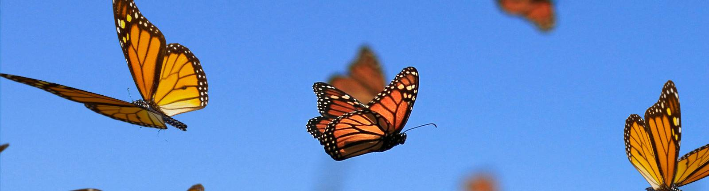
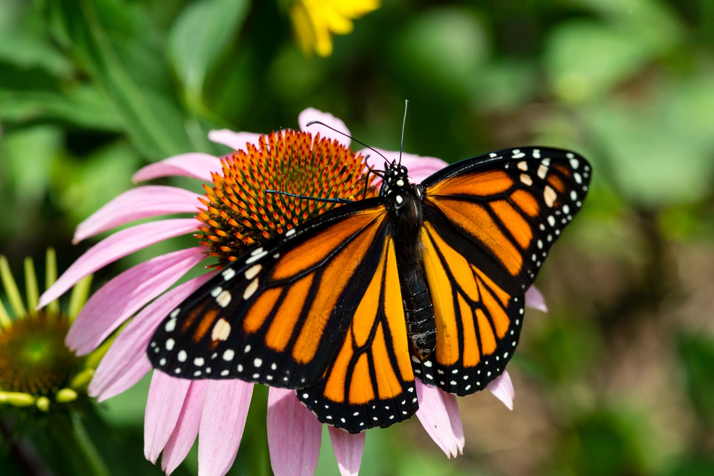
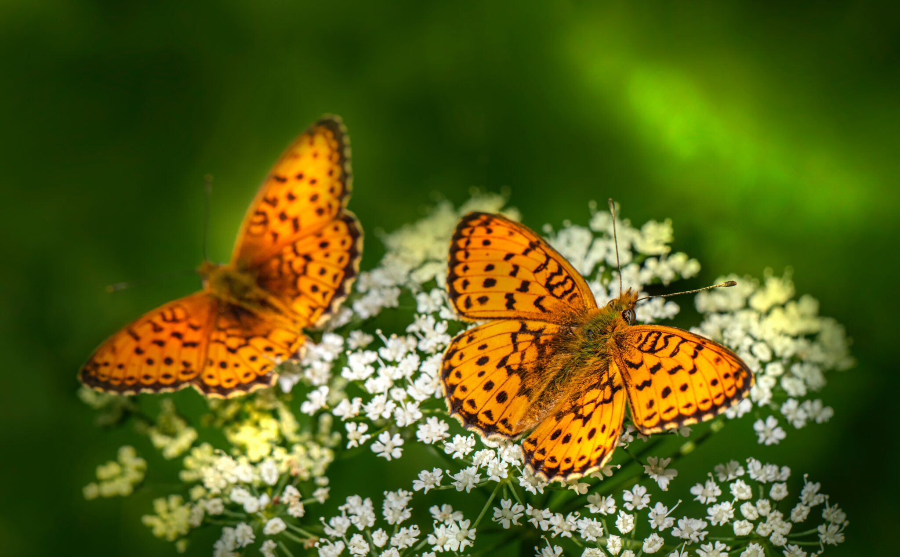

Butterflies are currently, with some arguments, placed into the following six families:
Hesperiidae. Known as "Skippers," containing relatively small, fast-flying species. About 3,000 worldwide species.
Lycaenidae. Blues, Hairstreaks and Coppers. Colors and patterns of sexes often differ. Over 5,000 world species.
Nymphalidae. Known as "Brush-footed" butterflies, contains many subfamilies. There are some 5,000 worldwide species.
Papilionidae. Known as "Swallowtail, butterflies, most species have prominent "tails." Some 600 species in the world.
Pieridae. Known as "Yellows and Whites, they have those colors predominantly. More than 1,000 worldwide species.
Riodinidae. Known as metalmarks, are sometimes placed in the Family Lycaenidae. About 1,000 species in the world.
There are about 17,500 species of butterflies in the world, and around 750 species in the United States.
- Butterflies taste with their feet
- Wings are transparent:
- That means they're clean
- They look like glass
- Butterflies cant fly in the cold

